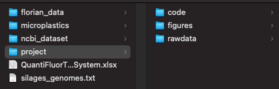
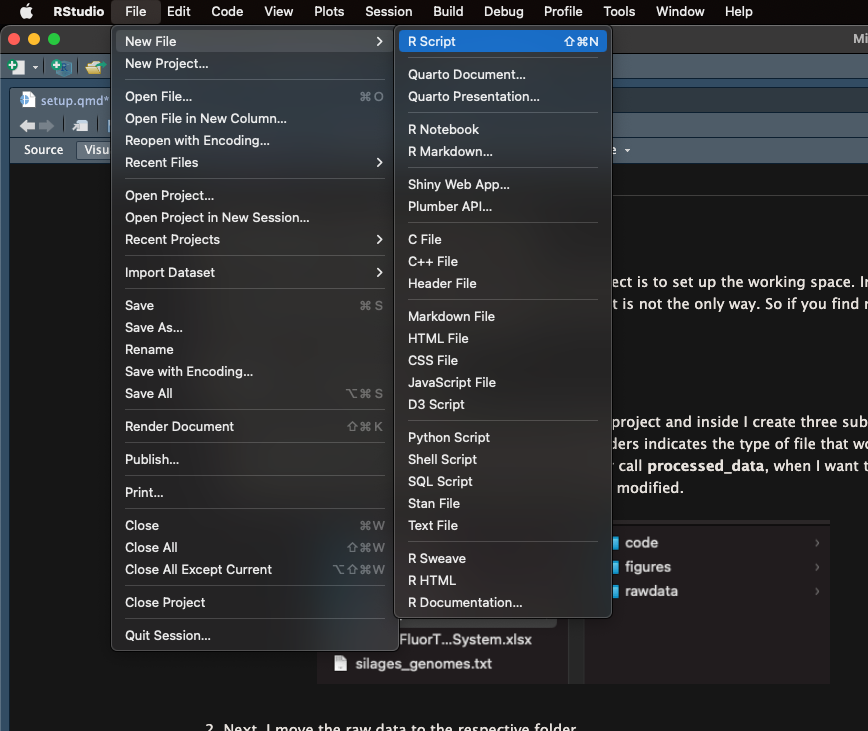
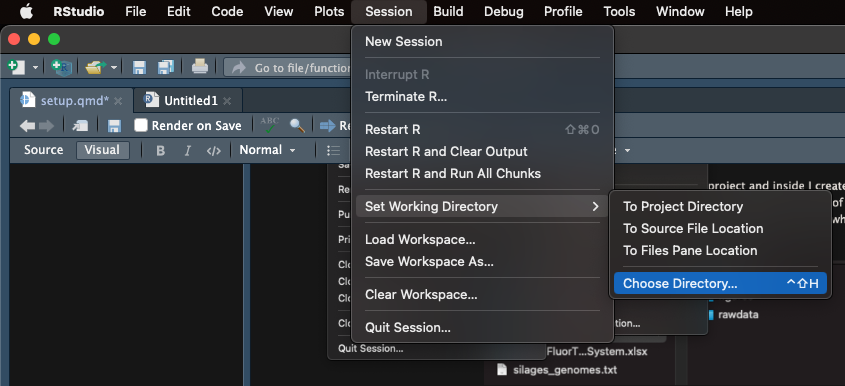
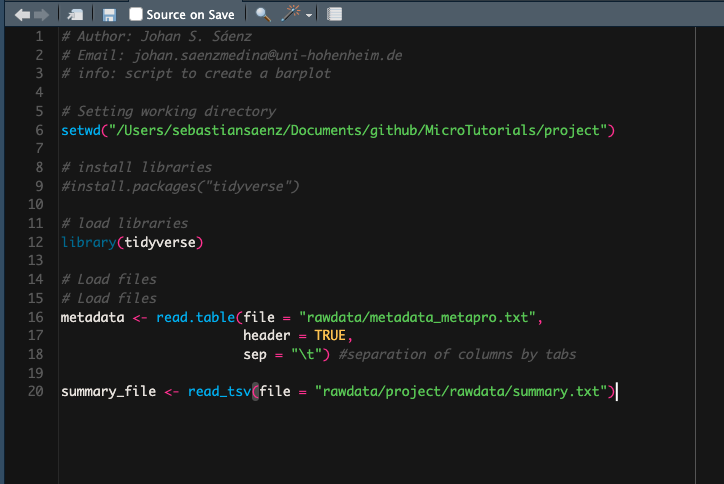

Working space set-up
The most important thing to do before starting a new project is to set up the working space. In this blog I will describe the steps that I follow and work for me but it is not the only way. So if you find new ways to set-up your working space feel free to do it.
Folder structure
- First of all, you should create a main folder with the name of the project and inside, you should create three sub folders call: rawdata, code and figures. The names of the folders indicate the type of file that would be stored in each of them. Sometimes I also create a folder call processed_data, when I want to save intermediate files. The file in the raw data must not be modified during the analysis.

- Next, You should move the raw data to the respective folder.
- After, You should create a new R script and then Save as… inside the code folder. I always give meaningful names to my files. Those names are based on the main goal of the script. For example if it is to create a bar plot, I name the file barplot.R

Working directory
Following, You should open the new R script and use the symbol # to add some comments to the file. The # indicates that the line would not be run by R. The # is quite useful as you can add different comments to help you and other people to understand your code.
# Author: Johan S. Sáenz # Email: johan.saenzmedina@uni-hohenheim.de # info: script to create a barplotThen, you should select the working directory in the Session menu. You should select your project folder. You will notice that in the console the following code was printed:
setwd("/Users/sebastiansaenz/Documents/github/MicroTutorials/project"). Copy the code and paste it in your script. Add a comment indicating that the following line is used to set up your working directory. The project folder would now be consider the root directory.

# Author: Johan S. Sáenz
# Email: johan.saenzmedina@uni-hohenheim.de
# info: script to create a barplot
# Setting working directory
setwd("/Users/sebastiansaenz/Documents/github/MicroTutorials/project")Installing and loading libraries
- R has several pre-build functions but other packages created by the community can be use as long as they are install and load. Now you can use the function
install.packages()to install the packages that we would need for our analysis. This function should be use only once, because after the installation, the package will be available to be load even after closing the software. On the other hand, the functionlibrary()must be use every time a new R session is initiate. After installation you can comment out the#install.packages("tidyverse"). The longer you work in R, more new packages you will add to your collection.
# Author: Johan S. Sáenz
# Email: johan.saenzmedina@uni-hohenheim.de
# info: script to create a barplot
# Setting working directory
setwd("/Users/sebastiansaenz/Documents/github/MicroTutorials/project")
# install libraries
#install.packages("tidyverse")
# load libraries
library(tidyverse)Load files
- Finally, you should load the files that you are going to use specifically in this script. For this we can use two functions, one pre-build in R (
read.table()) and one from the Tidyverse package (read_tsv()). There are several function to load files in the R environment, some of them with broad purposes but also some for specific tasks. Lets clarify some things:
The arrow (<-) indicates that everything on the right would be store in the object on the left. After running this code, you will see that the left object is stored in the environment. You could run the code without assigning the function to an object, however this would not be store in the environment.
The name of the object (e.g metadata) is short, meaningful and does not contain spaces.
The name of the file is given inside “quotation” and additionally the complete path of the file is written. Remember that in this case project is our root directory, so wee need to declare the path including the rawdata folder.
Different functions have different arguments. For example the
read.table()needs the argumentsheader(assign the first row as header) andsep(declare how is the data frame separate: coma, space, tabs etc), otherwise the data frame will not load correctly. On the other had,read_tsv()is a specific function for loading files that are separate by tabs and the first row is the header, so it does not need any extra argument.
# Load files
metadata <- read.table(file = "rawdata/metadata_metapro.txt",
header = TRUE,
sep = "\t") #separation of columns by tabs
summary_file <- read_tsv(file = "rawdata/project/rawdata/summary.txt")At the end you can see that your script is accumulating code so do not forget to save it. Next time you open it, you only need to run it and you would be ready to start the analysis and wrangling of your data. The set up of your environment can get very complex because you can add more libraries, assign colours palettes to object, add new fonts and even creating whole themes (size, colours, fonts, scales) to standardize all your plots.
